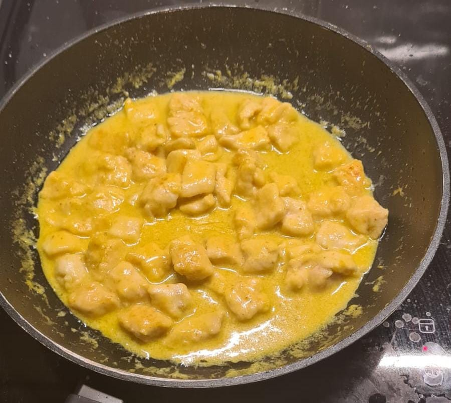

Pollo al Curry Veloce e Gustoso

Ingredienti
- 150 g petto di pollo
- 1 bicchiere di latte
- Farina q.b.
- Curry q.b.
- Burro q.b.
- Sale q.b.
Procedimento
- Tagliare il petto di pollo a pezzetti e infarinarli; mettere da parte.
- Scaldare in padella una noce di burro fino a scioglimento.
- Aggiungere il pollo infarinato e cuocere a fuoco medio per circa 5 minuti.
- Aggiungere il curry a piacere e mescolare bene.
- Versare il bicchiere di latte e continuare a mescolare finché non si forma una cremina.
- Regolare di sale e servire caldo.